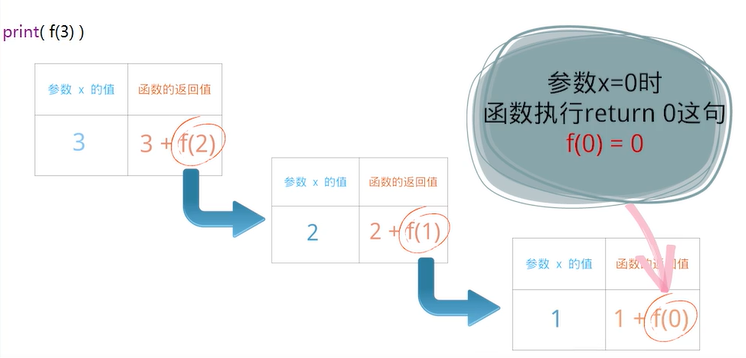

原文连接:https://www.cnblogs.com/xiaozhongfeixiang/p/11520161.html
迭代是人，递归是神！
从“编程之美”的角度看，可以借用一句非常经典的话：“迭代是人，递归是神！”来从宏观上对二者进行把握。
从概念上讲，递归就是指程序调用自身的编程思想，即一个函数调用本身；迭代是利用已知的变量值，根据递推公式不断演进得到变量新值得编程思想。
递归
递归就是函数自己调用自己。
构成递归需具备的条件：
1. 子问题须与原始问题为同样的事，且更为简单；
2. 不能无限制地调用本身，须有个出口，化简为非递归状况处理。
例：

解析:

在程序运行的时候，调用函做是有代价的，那就是，要占用一片叫做栈（stacky的内存空间）, 当调用函数时，都必须要放一些数据到栈里当函数运行结束时这些数据会从栈里被取出，可想而知,如果调用了很多函数但是这些函数都不返回，栈就被塞满了，数据没地方放了，这种情况叫做栈溢出错误.对程序运行而言。这是致命的错误，因此程序会被操作系统强行中止。
在Python中，可以人为设置递归调用的次数（深度），尽量保证程序不会崩溃。
迭代
int fib(int n){
int i, temp0, temp1, temp2;
if(n<=1) return n;
temp1 = 0;
temp2 = 1;
for(i = 2; i <= n; i++){
temp0 = temp1 + temp2;
temp2 = temp1;
temp1 = temp0;
}
return temp0;
}
迭代与普通循环的区别是：迭代时，循环代码中参与运算的变量同时是保存结果的变量，当前保存的结果作为下一次循环计算的初始值。
递归与普通循环的区别是：循环是有去无回，而递归则是有去有回(因为存在终止条件)。
在循环的次数较大的时候，迭代的效率明显高于递归。
方法
迭代的方式有所不同，假如有个产品要求6个月交货，我在第一个月就会拿出一个产品来，当然，这个产品会很不完善，会有很多功能还没有添加进去，bug很多，还不稳定，但客户看了以后，会提出更详细的修改意见，这样，你就知道自己距离客户的需求有多远，我回家以后，再花一个月，在上个月所作的需求分析、框架设计、代码、测试等等的基础上，进一步改进，又拿出一个更完善的产品来，给客户看，让他们提意见。
就这样，我的产品在功能上、质量上都能够逐渐逼近客户的要求，不会出现我花了大量心血后，直到最后发布之时才发现根本不是客户要的东西的情况。
优势
这个过程也很像打游戏，你刚开始玩，一下子就输了，但是随着你玩的次数越来越多，你的技艺就越来越精湛，而这个结果，不是你在开始玩游戏的时候，规划出来的，而是在你玩的过程中，通过不断的输不断的输，练出来的。
所以，你能达成的结果，都是在你做的过程中，不断试错，不断调整，不断精进，最后自然而然得到的一个结果。
所以，我们不能把迭代简单的理解为“升级”。
升级，更多描述的是一个结果，是一种直接的，一次性的，达成的一个目标，是一种线性的进程。
而迭代，是通过无数次，不断的，重复的，接近一个目标，折返接近，再折返再接近，最终达到目标。它不是一次性完成的，是通过不断重复的，但每次重复又比之前更好一点，这样一种非线性的进程。
现在我们把“迭代”的关键词拆解一下：
1.重复：
不断的重复做，而不是一次性的完成。
2.改进
在做的过程中不断的改进、调整、优化。
3.认知升级
迭代的过程就是不断提高认知的过程，升级只是这个过程的一个结果。